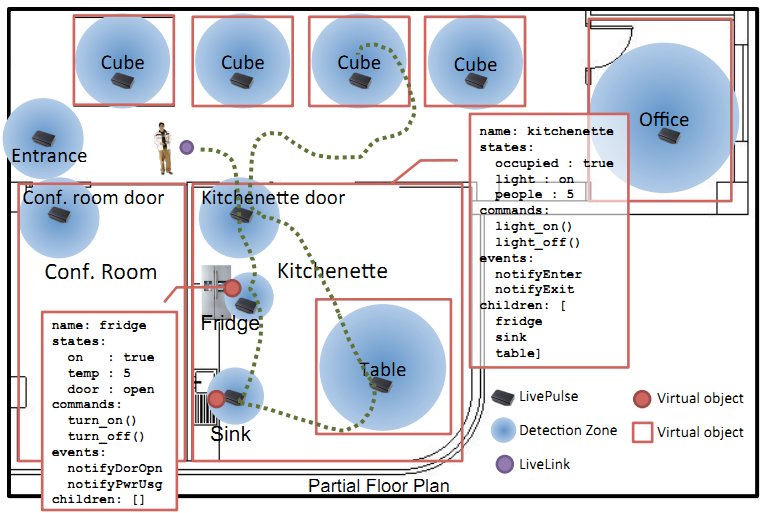

Overview
LiveSynergy is a novel system that provides reliable proximity sensing and open interactive abstractions for physical spaces and objects, to enable richer interactions between humans and their environment. It consists of three parts: LivePulses (devices that attach to physical objects to give them virtual zones using magnetic induction), LiveLinks (mobile devices carried by humans to discover and interact with LivePulses), interoperability platform (wireless links and a set of IPv6-based open interfaces between LivePulses and LiveLinks that allow intuitive interaction between humans and the physical world).
What Problem It Solves
Discovering, identifying, and interacting with physical objects in our surroundings are fundamental for enabling a rich set of indoor applications. So is the capability for the environment to detect and adapt to the presence of humans.
There is a wide range of sensing technologies to detect relative proximity, including barcode, 2D-tags, RFID, ultrasound, wireless links, and computer vision. However, none of those approaches provide enough precision for our application in a cost effective and practical manner.
How It Works
LiveSynergy architecture has three components.
Indoor Proximity SensingAll objects in the physical world occupy some tangible space. Interacting with an ob-ject can be represented as the event of entering its bound-ary. Consequently, accurately defining the zone of a physi-cal object, and reliably triggering boundary crossing events are paramount. In our system, LivePulses are beacons co-located with physical objects to project signals that clearly define consistent zones. With LiveLinks, the mobile beacon receiver, we can reliably detect boundary crossing events. |
 |
Networking BackboneThe networking backbone links Live devices and back-end servers for delivering sensor data and invoking object APIs. We impose three requirements on the network. First, data reliability is crucial for manipulating the object states. Second, each Live device should have a globally unique and addressable ID. Finally, as object inter-actions are real-time, the end-to-end latency should be low to improve the user experience.
Virtual Object OverlayPhysical objects have states. Objects offer APIs for manipulating their current states, andbe able to react to state changes in other objects. We mirror the physical world in the virtual plane (on back-end servers) and provide object abstractions through state, command , and event APIs. This design enables an event-based programming model for users to add logic and intelligence among objects. The virtual plane preserves the hierarchical nature of the physical world with a tree structure. |
|
/*TODO: will add more soon*/
System Implementation And Evaluation
/*TODO: will add more soon*/
Publications
Xiaofan Jiang, Chieh-Jan Mike Liang, Kaifei Chen, Ben Zhang, Jeff Hsu, Bin Cao, Jie Liu, and Feng Zhao. "Design and Evaluation of a Wireless Magnetic-based Proximity Detection Platform for Indoor Applications". To appear in the Proceedings of the 11th ACM/IEEE Conference on Information Processing in Sensor Networks (IPSN 2012), Apr. 2012. Beijing, China. (Available On Request)
(Acceptance rate = 22/147 = 15.0%)
Xiaofan Jiang, Chieh-Jan Mike Liang, Feng Zhao, Kaifei Chen, Jeff Hsu, Ben Zhang, and Jie Liu. "Demo: Creating Interactive Virtual Zones in Physical Space with Magnetic-Induction". In the Proceedings of the 9th ACM Conference on Embedded Networked Sensor Systems (SenSys 2011), pages 431-432, Nov. 2011. Seattle, WA. [pdf]
(Best Demo Award) [plaque]
My Contributions
1. Developed a magnetic data transmission system between LivePulses and LiveLinks in TinyOS, from hardware driver to high-level API and applications.
2. Developed the interoperability platform in TinyOS on both LivePulses and LiveLinks and in Python on server, using 802.15.4c radios, single-hop network topologies, and IPv6.
3. Improved the interoperability platform with regard to robustness and efficiency, involving aspects of duty cycle, packets caching, and CSMA.
4. Conducted several experiments to measure the performance of LiveSynergy and a cafeteria deployment as a real application.
5. Presented several demos in Microsoft Research Asia about LiveSynergy, including MSRA Open House for UbiComp 2011 and MSRA 2011 Technical Advisory Board Review.